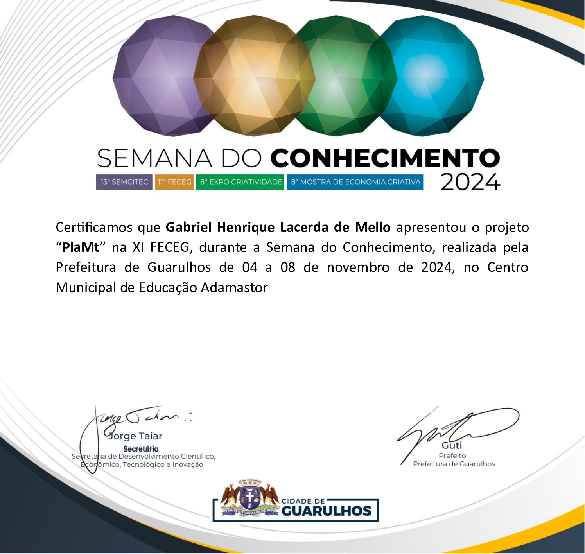
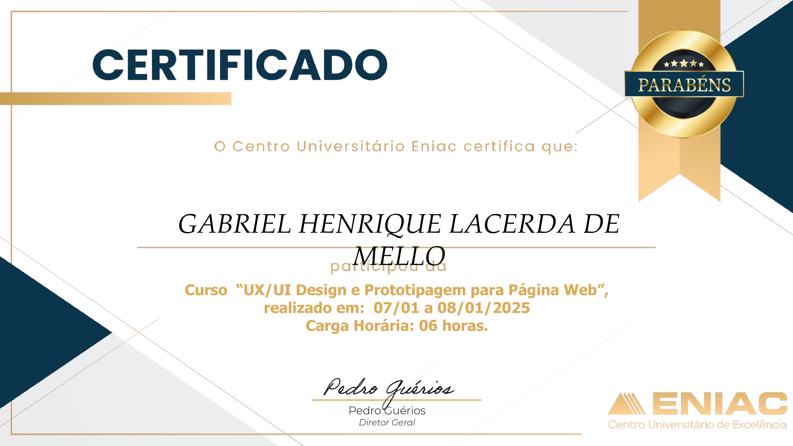
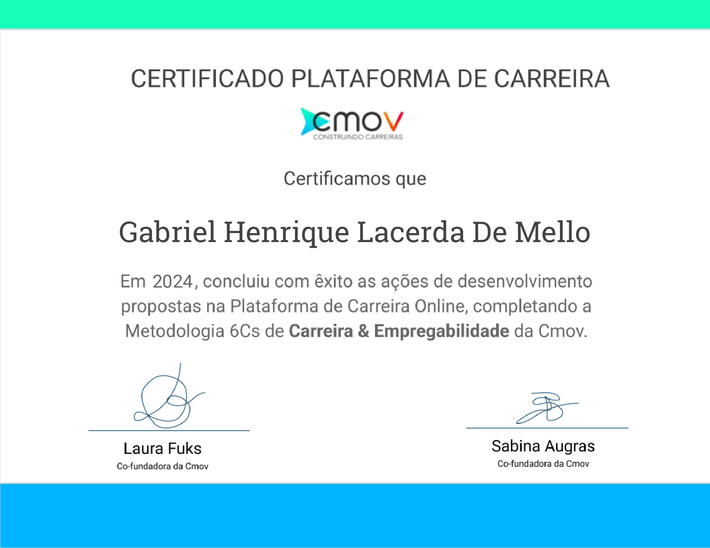

Formação / Certificados
Formação Acadêmica
Técnico em Informática - ENIAC, Guarulhos, (2024-2026).
Aprendizado dos fundamentos da computação. Meu projeto integrador foi um website informativo, focado nos biomas brasileiros e suas faunas e floras.
Certificados

Certificação de Participação - FECEG (2024)
Apresentação na Feira de Ciências e Engenharia de Guarulhos do projeto PlaMt, website informativo sobre os biomas brasileiros e suas riquezas.

UX/UI Design e Prototipagem para Página Web - ENIAC (2025)
...

Carreira & Empregabilidade - CMOV (2024)
...